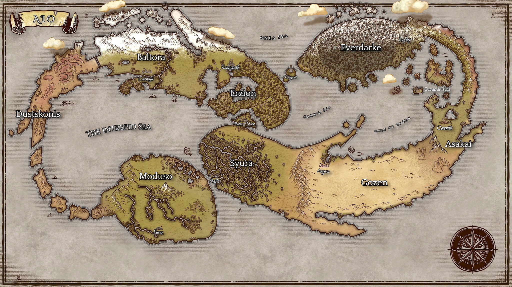

Dungeons and Dragons (DnD) is a tabletop roleplaying game where the limit is your creativity.
Find a gamemaster (or GM) to conduct a module for you and your friends or become your own GM with thousands of modules available online or in your local bookstore!
You can even create a setting entirely on your own in a method known as homebrew. Whether it be locations, races, or spells, anything is possible in your own curated universe!
As you will see, there is space for all sorts of creative minds such as artists, mapmakers, musicians, and writers! Below is a world map of very my own personal setting called Aio .
There are plenty of tools online to help on your DnD journey!
For mapmaking try out Inkarnate!
